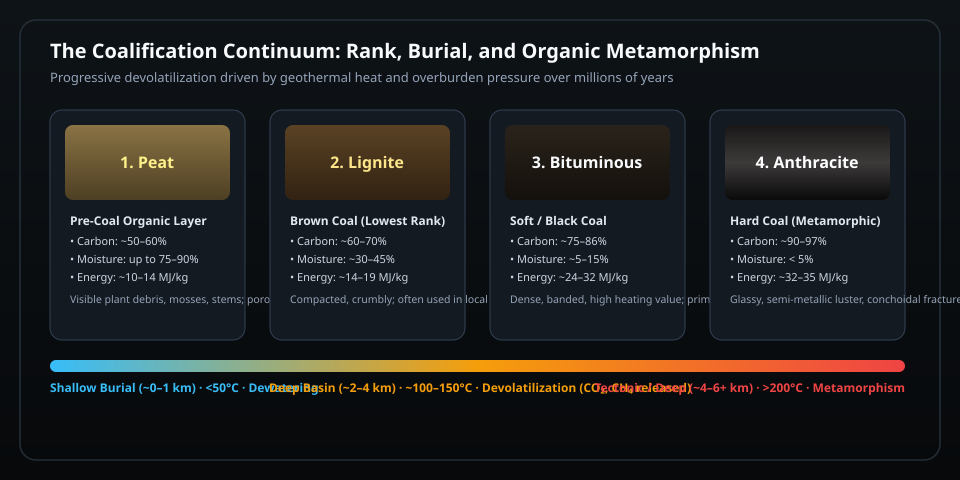
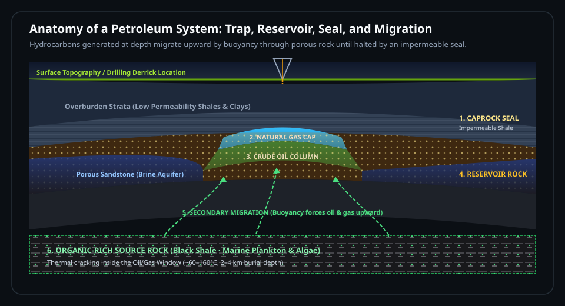

All three fossil fuels start the same way: dead organic matter buried faster than it can fully decay. From there, heat, pressure, and time — and which organisms did the burying — split the story into three very different fuels, formed hundreds of millions of years apart.
30–45 minutesInteractive lab simulatorCompanion to Evolution of Wood
~359–299 MyaMost coal forms from land plants buried in Carboniferous swamps.
~252–66 MyaMost oil and natural gas source rock forms later, in the Mesozoic, from marine plankton.
Millions of yrsThe timescale these fuels form on — much slower than we use them.
This lesson builds on The Evolution of Wood, which covers how lignin evolved and why Carboniferous swamp forests left behind so much undecayed plant material in the first place.
The one idea underneath all three fuels
Burial beats decay
Left alone, dead organisms are recycled by decomposers within years to centuries, and their carbon returns to the atmosphere. Fossil fuels form in the rare situations where organic matter is buried quickly — in a swamp, a lake bed, or an oxygen-poor seafloor — before decomposers can finish that job. Sealed away from oxygen, the leftover carbon slowly transforms under heat and pressure instead.
1
Produce
Living organisms (plants or plankton) build organic carbon from sunlight and CO₂.
2
Bury
They die and are buried quickly in low-oxygen sediment before fully decaying.
3
Cook
Heat and pressure from burial slowly convert that carbon into coal, oil, or gas.
Interactive simulation
Burial Maturation & Hydrocarbon Window Simulator
Test how burial depth, overburden pressure, and geothermal heat cook organic matter over millions of years. Select a starting organic material, adjust the depth and geothermal gradient, and observe the resulting phase transformation in real time.
1,200 m
30 °C/km
Calculated Temp
51 °C
Lithostatic Pressure
31 MPa
Geological Scenarios
From land plants
Coal: a four-stage squeeze
Coal forms from land plants — mosses, ferns, and trees — buried in swampy, low-oxygen wetlands. As layers of sediment pile on top, rising heat and pressure drive off water and volatile compounds in a process called coalification, concentrating the carbon that's left behind.

Figure 1 · The Coalification Continuum — Progressive devolatilization driven by geothermal heat and burial pressure over millions of years. As water and volatile gases (CO₂ and methane) are expelled, carbon density rises from ~50% in peat to over 90% in anthracite.
Lignite"Brown coal," soft, ~60–70% carbon, still crumbly
BituminousDense, dark, ~75–85% carbon — the most commonly mined coal
AnthraciteHardest, shiniest, ~90%+ carbon, burns hottest and cleanest
Figure 1.1 — Coalification summary: as burial depth, heat, and pressure increase from left to right, water and volatile gases are driven out and the remaining material becomes harder, darker, and more energy-dense.
Why Carboniferous coal is so abundant: Vast tropical swamp forests, wet and low in oxygen, buried enormous volumes of woody plant debris. Whether that debris also resisted decay because lignin-eating fungi hadn't evolved yet is a genuinely contested question among scientists — see The Evolution of Wood for both sides of that debate.
From marine microorganisms
Oil & natural gas: cooked kerogen
Oil and natural gas mostly come from a very different source: marine algae and plankton, not land plants. When they die, their remains settle into oxygen-poor mud on lake or ocean floors and mix with fine sediment. Buried deeper over millions of years, that organic-rich mud turns into a waxy solid called kerogen — the raw material for petroleum. As kerogen is buried deeper and gets hotter, it "cracks" into different products depending on temperature.

Figure 2 · Anatomy of a Complete Petroleum System — Hydrocarbons generated inside deep, hot source rock crack into liquid oil and natural gas. Because oil and gas are lighter than subterranean brine, buoyancy drives them upward through permeable carrier beds until they hit an impermeable caprock seal (such as dense shale or evaporite salt), creating an extractable reservoir trap.
Immature kerogen
Oil window ~60–160°C
Gas window ~150–225°C
Overcooked
Shallow, coolProduces liquid oilProduces natural gasDeep, hot — carbon left as graphite
Figure 2.1 — The "oil window" and "gas window" describe the temperature ranges (driven by burial depth) where kerogen breaks down into liquid petroleum versus natural gas. Too shallow and the kerogen hasn't cooked enough; too deep and it overcooks past usable hydrocarbons.
Once formed, oil and gas are less dense than the surrounding rock and can migrate upward through porous rock until they hit an impermeable layer, where they pool into a reservoir — the deposits companies drill into.
Table 1 — Natural gas can form directly from marine kerogen, or as a byproduct when coal or oil is buried even deeper and heated further.
Common myth, corrected: Oil does not come from dinosaurs. Dinosaurs were far too rare, and too recent relative to most oil-forming rock, to be a meaningful source. The overwhelming majority of petroleum's original carbon came from microscopic marine life.